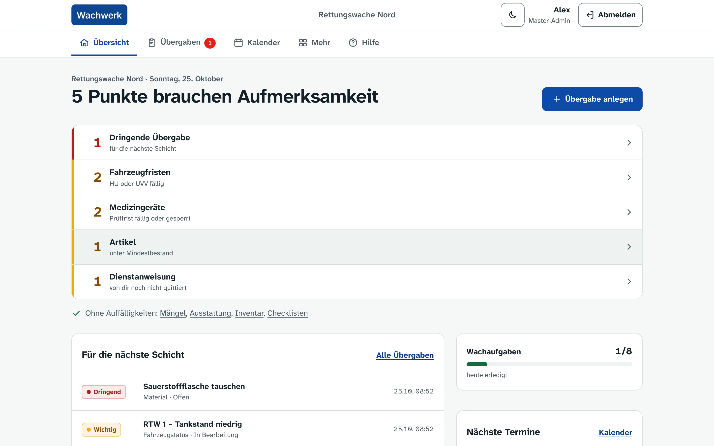
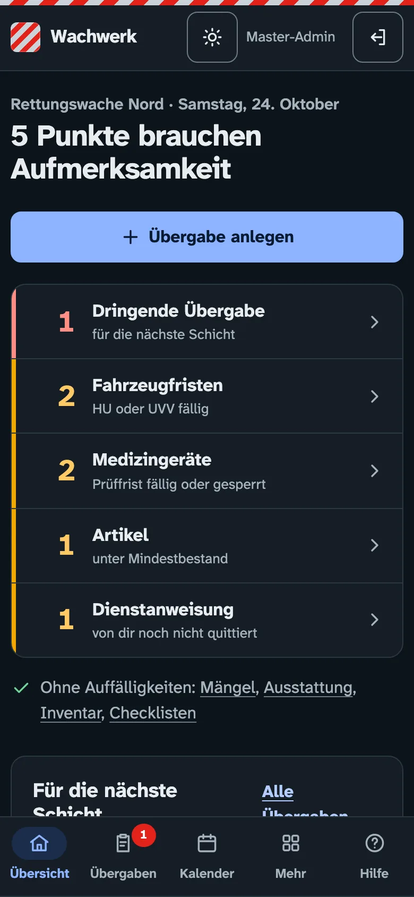
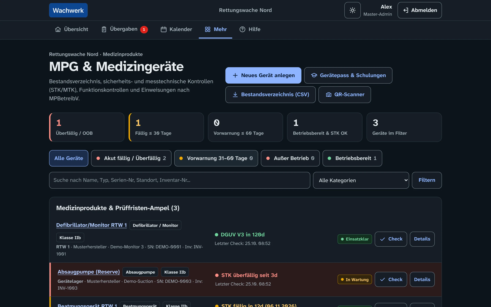
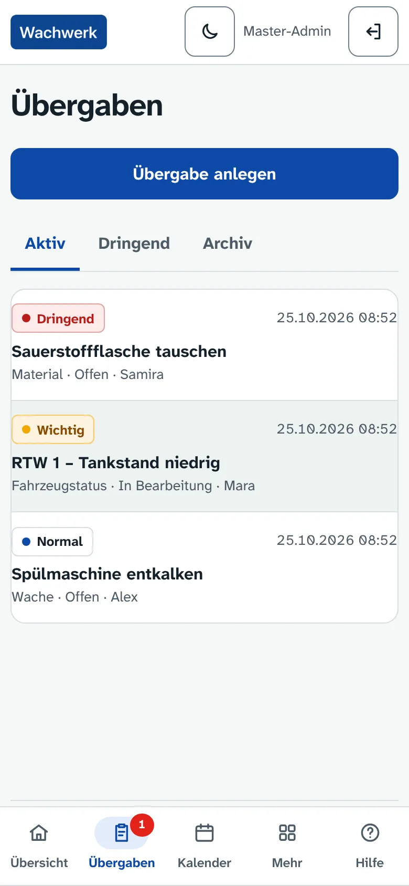
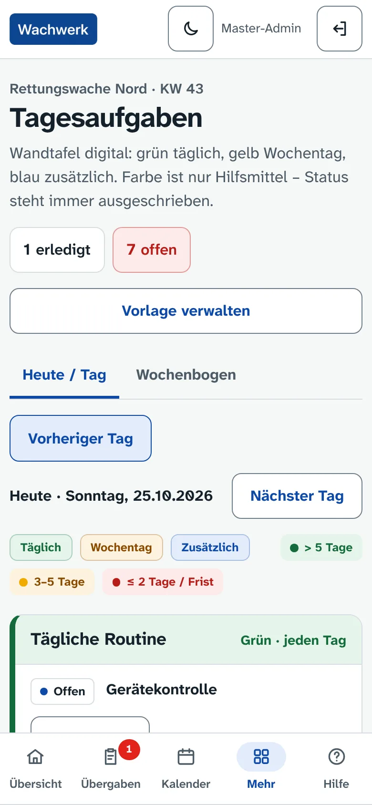
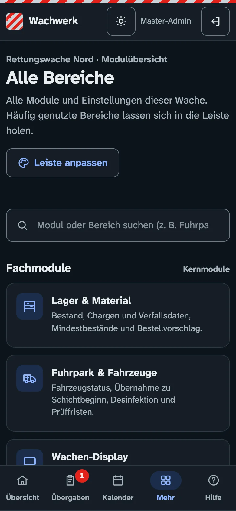

Open-source station logbook for ambulance stations · German-language interface
What the shift needs to know. At a glance.
Handovers, defects, vehicles, medical devices, supplies and daily tasks in one place. Wachwerk runs on a server in your own station and installs with one command. No cloud account, no external scripts.
Sign in at demo.rwsth.de with Demo / Demo. Every visit gets its own station with made-up data, deleted when you sign out. The interface is in German.


The real interface, not a mock-up
All screenshots come from the locally running application with synthetic data: an invented station, invented accounts, no real events. Light by day, dark at night – the view follows the device or a switch.







What Wachwerk actually does
Every area listed is implemented in the repository and covered by the test suite. They organise how a station runs – not the emergency response.
Station routine
- OverviewShows what needs attention first; everything else stays in one quiet line.
- Shift handoversPriority, status, revisions and personal acknowledgement.
- Daily tasks and checklistsRoutine per day and weekday, recurring checks with documented completion.
- Calendar, pinboard, newsEvents with public holidays and ICS feed, notices, read receipts.
- Coffee fundRunning ledger instead of a total that can be overwritten.
Specialist modules
- DefectsDeadline, photo, responsible person and history.
- FleetShift takeover, disinfection with contact time, inspection deadlines.
- Medical devicesDevice log modelled on German MPBetreibV, with locks and release.
- Stores and suppliesBatches, expiry dates, minimum stock and order proposals.
- Instructions and displayVersioned documents with read receipts, full-screen display for the vehicle bay.
Operations and access
- Personal accountsFive roles per station, one-time invitation links, optional two-factor and passkeys.
- Station terminalTouch screen with a station code for everyday areas.
- Apps for iOS and AndroidOpen-source Flutter client using the versioned API.
- Backup and updatesDaily backups, nightly updates with automatic rollback.
- Audit trailSecurity-relevant changes remain traceable.
What deliberately stays out
Wachwerk is an organisational logbook. The boundary is intentional: it keeps data protection manageable and the interface simple.
- No incident command systemNo alerting, no incident management, no dispatch centre link.
- No patient documentation systemNo field for patient, diagnosis or incident data – such content does not belong here.
- No duty schedulingNo rosters, time accounts or performance ratings.
- No cloud serviceOne instance belongs to one station. No central operator, no telemetry.
Installed in 5 minutes
All you need is a 64-bit machine with Docker and Compose v2 – a small server, a Raspberry Pi 5 or a Mac. The installer checks everything, generates all keys itself and starts Wachwerk.
curl -fsSL https://raw.githubusercontent.com/Katschko-IT/Rettungswache-Wachbuch/main/install.sh | shChoose the mode
This machine only, on the station Wi-Fi with HTTPS from a station-owned CA, or with your own domain and Let's Encrypt.
Set up the station
The installer shows a setup code. The wizard at
/setup/creates the station and the first admin account.Invite the team
Everyone activates their account via a one-time link or QR code and sets their own password.
Let updates run
wachbuch auto-update aninstalls security updates at night: a backup first, and an automatic return to the previous version if the start fails.
One server in the station
If the internet goes down, the station keeps working on its own network: sign-in, roles, tasks and checklists are verified by tests with external calls blocked.
| Application | Django 6.1 on Python 3.14, Gunicorn, WhiteNoise |
|---|---|
| Database | PostgreSQL 17 with separate roles for app, feeds, push and backup |
| Operations | Docker Compose with ready-made images for amd64 and arm64, rebuilt weekly with security updates |
| Access | Caddy as HTTPS proxy (station-owned CA or Let's Encrypt); the application itself only listens locally |
| Minimum | 1 vCPU, 1 GB RAM; for several devices and backups 2 vCPU and 2 GB RAM |
| Lizenz | AGPL-3.0, vollständiger Source code on GitHub |
Pre-production, stated openly
This status separates what is implemented and tested from what can only be proven in a real station.
Implemented and tested
- Station routine, specialist modules, roles, invitations and audit
- Installation, backup, restore and updates with rollback
- End-to-end tests in the browser and the iOS app against a Docker installation
- Operation on the station network during an internet outage
- Day and night views, touch targets from 48 pixels, keyboard focus
Open before production use
- External acceptance: real hardware in the station, phones on Wi-Fi, Let's Encrypt
- Passkeys and web push on real devices
- Data protection impact assessment, retention concept and works council involvement by the operator
- Independent security review
- Writing without a network (outbox) in the app: not implemented; the app only keeps a short, encrypted read cache
No production approval. This page describes the development status of the repository. It is not an approval for operation and does not confirm any compliance requirements.
Frequently asked questions
Does it need an internet connection?
No. Sign-in, roles, forms and fonts are served locally. Only optional sources such as weather or traffic, and updates, need the internet.
Who runs the server?
The station or its operator. There is no central instance; data does not leave your own server.
How do updates reach the server?
With wachbuch update, or automatically via wachbuch auto-update an. Every update starts with a backup; if the new version does not start, the previous one runs again.
Does it work on a phone?
Yes, as an installable web app in the browser and as an open-source app for iOS and Android. Writing needs a connection to the station server.
What does Wachwerk cost?
Nothing. The source code is licensed under the AGPL-3.0. Costs only arise for your own hardware and operation.